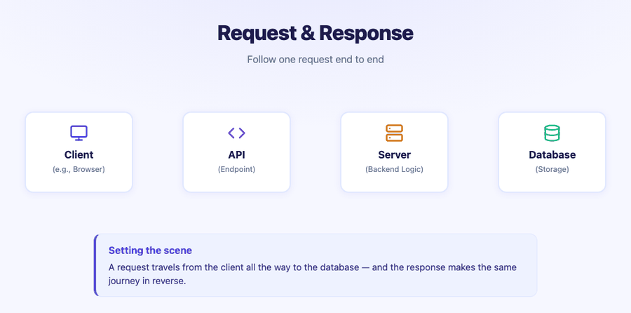
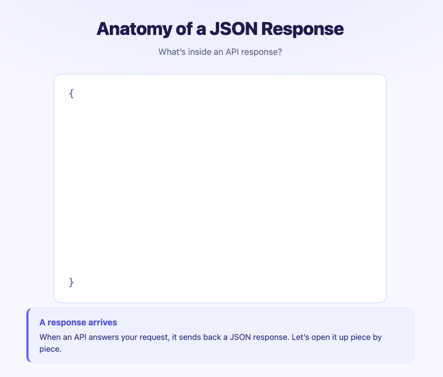

Session 1: JSON Fundamentals & Request/Response
Day 1 — 8:00 AM to 9:00 AM
Welcome & Orientation
Welcome to the API Workshop! Over the next two days (4 hours total), we will build a strong foundation in working with APIs — from understanding the data format they use, to making real requests and handling real responses.
Workshop Structure:
| Day | Time | Session | Focus |
|---|---|---|---|
| Day 1 | 8:00–9:00 AM | Session 1 | JSON Fundamentals & Request/Response |
| Day 1 | 9:00–10:00 AM | Session 2 | CRUD, HTTP Methods, URL Anatomy & Dummy Server |
| Day 2 | 9:00–10:00 AM | Session 3 | Weather API — Setup, Current Weather, Geocoding |
| Day 2 | 10:00–11:00 AM | Session 4 | Historical Weather, Visualization & Wrap-Up |
Tool Note: We will be working in Positron throughout. You can follow along in RStudio, but Positron will give you a richer experience for this workshop.
Part 1: What is an API?
API stands for Application Programming Interface. At its core, an API is a way for software to communicate with other software. In data science, we use APIs to programmatically request data from external servers — weather services, sports databases, social media platforms, and more.
Think of the restaurant analogy:
- You (the client) look at the menu and place an order.
- The waiter (the API) carries your order to the kitchen.
- The kitchen (the server/database) prepares your food.
- The waiter brings back your meal (the response).
The key insight: you never walk into the kitchen yourself. The API is the controlled interface that lets you interact with the data source.
———————
Q1.
(Multiple Choice): What is the primary utility of a web API for a data analyst?
- To create visual websites for data projects.
- To allow programmatic, repeatable, and direct access to live data from an external source.
- To store large CSV files in the cloud.
- To design the database structure for a server.
b) An API provides a structured way for a program (like an R script) to directly request and receive live data, making data acquisition automated and scalable.
———————
Part 2: API Data Flow
Let’s go deeper into the architecture. The flow of data through an API follows a predictable pattern:
Request direction: Client (request) → API → Server → Database
Response direction: Client ← API ← Server (response) ← Database
The animation below traces a single API call from start to finish. There are four components in the chain: the Client (your R script or browser), the API (the endpoint — the “front door”), the Server (backend logic that processes the request), and the Database (where the actual data lives). The request moves left to right; the response travels the same path in reverse.

- The client is your R script or browser — anything making the request.
- The API is the endpoint — the “front door” of the data service.
- The server processes the request and queries the database.
- The response travels back the same path.
- A client and server can exist on the same computer — this is common in local development.
———————
Visual Check — API Data Flow.
(Multiple Choice): In the animation, the API sits between the Client and the Server. What best describes the API’s role in this chain?
- It stores the data permanently.
- It acts as a gateway — receiving requests from the client and routing them to the server.
- It runs the backend logic that queries the database.
- It is the same as the database.
b) The API is a gateway or controlled interface. It does not store data (that’s the database) and it does not run the core business logic (that’s the server). It is the stable “front door” that clients talk to, and it routes requests onward.
———————
———————
Q2.
(Open-Ended): Using the restaurant analogy where the API is a waiter, describe the step-by-step process of you (the client) successfully ordering and receiving a “current weather forecast” from the kitchen (the server).
I (the client) look at the menu (API documentation) and decide what I want. I then give my specific order for the “current weather forecast” to the waiter (the API). The waiter takes my request to the kitchen (the server), which has access to the fridge (the database). The kitchen prepares my order and gives the finished dish (the JSON data response) back to the waiter, who delivers it to my table.
———————
———————
Q3.
(Multiple Choice — Callback to Q1): In the restaurant analogy, the API documentation is most analogous to:
- The kitchen equipment
- The menu
- The cash register
- The table number
b) The menu. Just like a menu tells you what’s available and how to order it, API documentation tells you what endpoints exist, what parameters you can send, and what responses to expect.
———————
Part 3: Requests and Responses
Now let’s zoom in on the two key actions: requests and responses.
What is a Request?
The client sends a request asking for information. This request includes:
- A URL (e.g., with parameters like
?q=San+Luis+Obispo) - Possibly an API key (for authentication)
- A method (e.g.,
GETorPOST— more on these in Session 2)
The request is constructed as a URL string. We’ll dissect URL anatomy in the next session.
What is a Response?
The server returns a response which contains:
- Data — the actual information you requested (temperature, artist name, forecast, etc.)
- Metadata — information about the response (timestamps, rate limits, etc.)
- Status code — tells you whether the request was successful (e.g.,
200 OK)
This information is traditionally provided in JSON format.
———————
Q4.
(Open-Ended): What is the fundamental difference between an API request and an API response?
A request is what you send to a server to ask for information. It’s an outgoing message that includes the endpoint URL, your API key, and the specific parameters for your query. A response is what the server sends back to you. It’s an incoming message containing the data you asked for (the body), a status code indicating success or failure, and other metadata.
———————
Part 4: Anatomy of a JSON Response
Now let’s focus on the response — specifically, what it looks like. API responses are almost always formatted as JSON (JavaScript Object Notation).
The animation below reveals the layers of a JSON response. The entire thing — everything the server sends back — is called the Body or Content. It is wrapped in curly braces { }. Inside that body, the content is divided into three zones: the data (what you asked for), metadata (context about the response), and the status code (the success or failure signal). The animation builds these zones one at a time so you can see how they fit together.

When we send a request to an API, we get a response body, which includes the content — typically JSON — divided into:
- Data: what we actually wanted (temperature, city name, coordinates)
- Metadata: information about the response (timestamps, units, request ID)
- Status code: tells us if the request worked
———————
Visual Check — JSON Response Anatomy.
(Open-Ended): The animation shows the entire response wrapped in { }. When you call resp_body_json() in R to parse this response, what R data structure does that outer { } (a JSON object) become, and how would you access the value for a key called "temperature" inside it?
A JSON object ({ }) becomes a named list in R. To access the value for "temperature", you would use result$temperature or result[["temperature"]], where result is the variable holding the parsed response.
———————
JSON Structure: Key-Value Pairs
JSON organizes data using key-value pairs. Here’s a simple example:
{
"city": "San Luis Obispo",
"temperature": 72,
"units": "imperial",
"conditions": "clear sky"
}Key features of JSON:
- Data is wrapped in curly braces
{ } - Each entry is a
"key": valuepair - Values can be strings, numbers, booleans, arrays, or nested objects
- Nested objects are JSON inside JSON — like a list within a list
Nested JSON Example
{
"city": "San Luis Obispo",
"coordinates": {
"lat": 35.28,
"lon": -120.66
},
"weather": {
"main": "Clear",
"temp": 72,
"humidity": 45
}
}In R, a JSON response becomes a named list — potentially containing other named lists inside it. This is what we mean by “nested.” When we flatten it with as.data.frame(), nested keys become column names like coordinates.lat or weather.temp.
———————
Q5.
(Multiple Choice): The JSON data format, commonly used in API responses, organizes information using what fundamental structure?
- Rows and columns
- A nested series of bullet points
- Key-value pairs
- Formatted paragraphs of text
c) JSON data is built on key-value pairs (e.g., "city": "Chicago"), where a “key” is a string and a “value” can be a string, number, boolean, array, or another object.
———————
———————
Q6.
(Open-Ended — Callback to Q4): Given the nested JSON example above, if you converted this to a data frame in R using as.data.frame(), what would the column name for the latitude value be?
The column name would be coordinates.lat. When R flattens a nested JSON structure into a data frame, it joins the nested key names with a period. So coordinates → lat becomes coordinates.lat.
———————
Part 5: Status Codes
Status codes tell you what happened with your request. They are grouped by category:
| Range | Category | Meaning |
|---|---|---|
| 1xx | Informational | Request received, processing… |
| 2xx | Success | Request was successful |
| 3xx | Redirect | Resource moved to a different URL |
| 4xx | Client Error | Something wrong with your request |
| 5xx | Server Error | Something wrong on the server’s end |
The most important ones for data work:
- 200 OK — Success! You got your data.
- 401 Unauthorized — Your API key is missing or invalid.
- 403 Forbidden — You don’t have permission to access this resource.
- 404 Not Found — The endpoint or resource doesn’t exist.
- 429 Too Many Requests — You’ve hit the rate limit.
- 500 Internal Server Error — The server broke; not your fault.
In most data API work, your goal is to get a 200 response. If you don’t, the status code tells you where to look for the problem — your request (4xx) or their server (5xx).
———————
Q7.
(Discussion): You write a script to get weather data, but it fails with a 404 Not Found status code. Based on the 400-level error category, is it more likely that the weather company’s server is broken, or that you made a mistake? What part of your request is the most likely source of the error?
A 404 Not Found error is a client-side error (4xx), meaning the mistake is on my end. It is not a server error (5xx). The most likely problem is that the URL endpoint I used in my request is incorrect or misspelled — I’ve asked for a “page” that doesn’t exist on the server.
———————
———————
Q8.
(Multiple Choice — Callback to Q5): If you receive a response with a status code of 200 and the body contains JSON, which of the following would you expect to find in that response?
- An error message explaining what went wrong
- Key-value pairs containing the data you requested
- A redirect URL to a different API
- An empty response with no content
b) A 200 OK status means success, and the JSON body will contain the key-value pairs with the data you requested — temperature, coordinates, city name, etc.
———————
———————
Q9.
(Open-Ended): You receive a 401 Unauthorized error when trying to access weather data. You’ve double-checked the URL and it’s correct. What is the most likely cause, and how would you fix it?
A 401 Unauthorized error means your API key is missing, invalid, or expired. The fix is to check that you’ve properly loaded your API key (e.g., from your .Renviron file), that the key is still active on the provider’s website, and that you’re passing it correctly in the request URL or headers.
———————
Session 1 Recap
In this session, we covered the conceptual foundation for working with APIs:
- What an API is — a controlled interface for software-to-software communication
- API data flow — Client → API → Server → Database (and back)
- Requests vs. Responses — what you send vs. what you get back
- JSON format — key-value pairs, nesting, and how it maps to R data structures
- Status codes — how to diagnose what happened with your request
Up next in Session 2: We’ll learn about CRUD operations, HTTP methods (GET vs. POST), URL anatomy, and make our first requests to a dummy server!